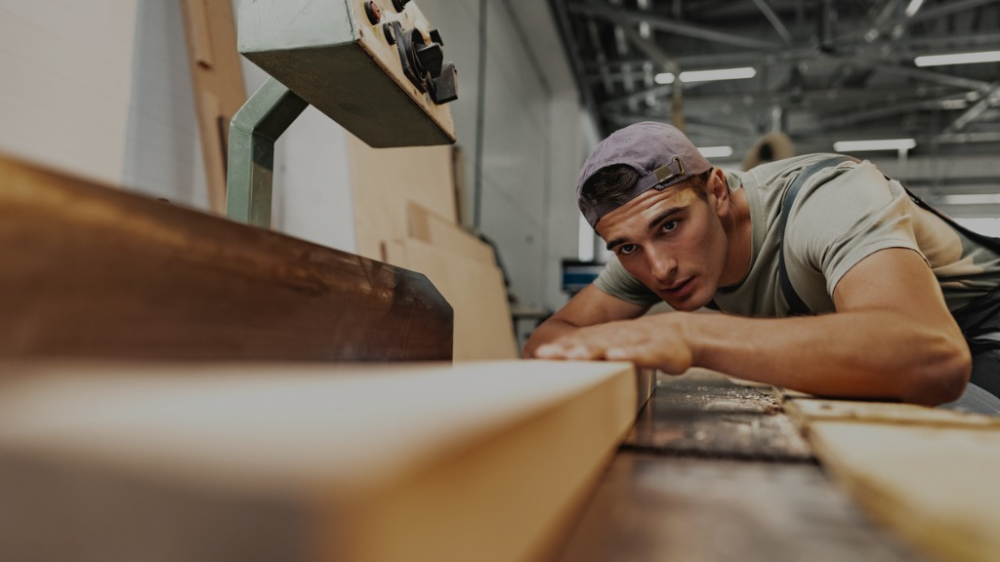
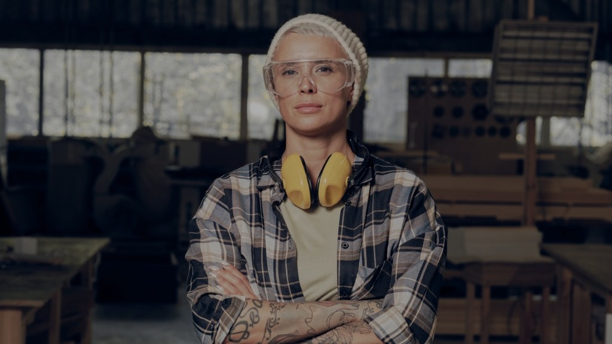
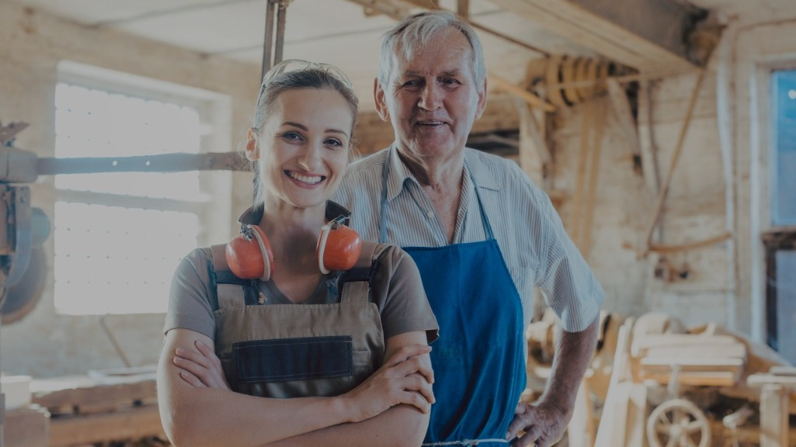

ДОБРО ПОЖАЛОВАТЬ
"Дедок" — это место, где встречаются люди разных профессий, чтобы творить, делиться опытом и вдохновляться друг другом. Здесь столяр может создавать изделия, мобилограф снимать процесс, а дизайнер превращать идеи в проекты. Все это происходит в атмосфере добровольного сотрудничества, где каждый получает радость от процесса, а синергия талантов рождает уникальные результаты.
Технически "Дедок" — это коворкинг мастерская, уникальное пространство, которое сочетает в себе удобство совместной работы и профессионально оборудованную мастерскую. Мы создали это место, чтобы каждый мог сосредоточиться на своем деле и при этом быть частью сообщества.
"Дедок" — это место, где ты можешь творить ради удовольствия или зарабатывать своим мастерством. Здесь воплощаются идеи, рождается вдохновение и создается сообщество единомышленников.
Мы здесь, чтобы взять на себя организационные вопросы, чтобы ты мог сосредоточиться на творчестве.
Добро пожаловать!
Уверены, это пространство получится таким каким задумывается только вместе с тобой!
ВАРИАНТЫ СОТРУДНИЧЕСТВА
Наша коворкинг-мастерская это пространство возможностей и здесь любой человек может проявлять себя в одной из следующих (или нескольких) ролей.
Не забудь изучить соответствующую роли вкладку, мы подготовили много интересных предложений! Независимо от того, какой путь сотрудничества ты выберешь, мы рады, что ты с нами.
НАШИ ПРАВИЛА
Чтобы сотрудничество и взаимодействие всех участников процессов было легким и радостным давай соблюдать установленные нами правила.
Уверены, соблюдение этих несложных правил приведет к успеху и тебя и окружающих.
В ЗАКЛЮЧЕНИЕ
Мы, коллектив коворкинг мастерской относимся с доверием и заботой к каждому. Ожидаем от тебя того же. Давай преумножать ее в наших отношениях.
Держи связь с нами!

life style.
Легкие и веселые видео, это сюда.

Миссия и ценности, стратегические цели, выполненные проекты и прочее

Эта группа создана для этого!
Важно!
Если ты читаешь этот абзац, то значит наши услуги для Хоббиста, Мастера и Ментора на данный момент не актуальны, но очень скоро мы это исправим.
Причину ты поймешь если когда прочитаешь вкладку "Партнер".
Но ты всегда можешь придти и посмотреть мастерскую, или проявлять активность в телеграм сообществе. Это нас будет только радовать и подстегивать быстрее завершить все работы для запуска коворкинга.





НЕМНОГО ФИЛОСОФИИ
ИДЕЯ БИЗНЕСА
ФилософияИдея бизнеса очень проста: мы помогаем людям становиться счастливыми.
В глубине души можно заметить: счастливыми нас делает — занятия любимым делом.
Соответственно наша задача: дать тебе возможность найти то, что делает тебя счастливым.
Вот и вся философия идея! 😎
"Тоже мне идея. Каждый бизнес зарабатывает на идее делать людей счастливыми" - скажешь ты и будешь прав, но...
ХОББИ
ЭТО ПОИСК НАСТОЯЩЕГО СЕБЯ
Как было отмечено сверху, нас делает счастливым делание. Это называют созиданием или творением.
Мы глубоко уверены что это заложено в каждом человеке. Наша деятельность направлена на то, чтобы раскрыть этот скрытый потенциал в человеке.
Узнавая какое занятие нравится, начинаем узнавать себя.
Нет другого способа узнать, нравится занятие или нет, кроме как попробовать. Но чтобы пробовать, нужны соответствующие обстоятельства.
Алгоритм (шаги) узнавания себя:
нравится или нет?
Лучшее узнавание себя.
Как правило второй шаг, вопрос организации самый тормозящий, к примеру:
У тебя есть желание попробовать заняться сваркой (первый шаг пройден, отклик есть). Тогда нужно решить вопросы второго шага и внутри появится диалог:
(или взять в аренду?)
(трубы, электроды, маска, магнитный зажим)
(не во дворе же 9-этажки!)
(youtube наверное поможет)
А стоит игра свеч?
(наверное нет)
(будь реалистом,
не гоняйся за желаниями)
Наверняка тебе это знакомо! Именно для решения этих организационных проблем существуем мы.
Наша цель: собрать и организовать все необходимое, чтобы помочь тебе найти свое занятие (или наоборот узнать: "это точно не мое").
Узнать что не мое, так же важно как и узнать что мое
В итоге, идею можно переформулировать: "Мы помогаем найти свое занятие и помогаем заниматься им!"
ПЕРЕСЕЧЕНИЕ ХОББИ
Есть у тебя знакомые которые обучились такой специальности как мобилограф? А может тебе нравится фотографировать людей? Или того хуже: рисовать портреты сюжеты!
Уверен, есть много людей которые хотят развиваться в этих направлениях. Причем тут коворкинг-мастерская?
А при том, что эти люди тоже могут оттачивать свое мастерство в нашей коворкинг-мастерской. Ведь тут работают люди, и мобилограф может учиться своему ремеслу снимая как они работают, или сделать таймлапс большого проекта: "Рождение дубового кухонного стола от А до Я руками рукожопа". Фотографам, художникам и другим специализациям при желании тоже можно найти способы саморазвития и самореализации.
Будет желание и воображение, откроются и соответствующие возможности
Каким мы видим это место?
"Дедок" — это место, где встречаются люди разных профессий, чтобы творить, делиться опытом и вдохновляться друг другом. Здесь столяр может создавать изделия, мобилограф снимать процесс, а дизайнер превращать идеи в проекты. Все это происходит в атмосфере добровольного сотрудничества, где каждый получает радость от процесса, а синергия талантов рождает уникальные результаты (© chatgpt).
Нами движет идея объединения творческих людей и тогда должно появиться общение-печенье сообщество. На наш взгляд объединение людей с общими ценностями тоже должно способствовать увеличению счастья.
Но как бы не были хороши наши прекрасные, тонко-идеалистические помыслы: мы живем в довольно грубом и жестком мире реальности. В мире, где прекрасные идеи не накормят твоих детей.
Поэтому, мы подходим к главному важному, к тому чтобы: выставить счет за возможность познания счастья!
Примечание: платно только доступ к инструментам и рабочим местам. Мобилографы и художники, вы работаете в нашем пространстве бесплатно по договоренности с хоббистом.
ПОЧЕМ НЫНЧЕ СЧАСТЬЕ???
А сколько счастья тебе отсыпать?
Если нужно что то быстро отремонтировать
Если нужно отремонтировать, но нужно больше времени
(7 календарных дней)
(30 календарных дней)
ЧТО ВХОДИТ В СЧАСТЬЕ?
За эту плату ты получшь!
- Одно рабочее место размером: 60х120 см (половина стола 120х120 см).
- Доступ ко всем ручным инструментам.
- Доступ ко всем ручным электроинструментам.
- Доступ к следующим станкам:
- Все виды шлифовальных станков.
- Ленточнопильный станок.
- Сверлильный станок.
- Советы и помощь инструктора мастерской.
- Нашу благодарность и любовь (впрочем, ее можно получить бесплатно).
Дополнительно
За дополнительную опцию "Оснастка", ты можешь использовать расходники и оснастку которые есть в мастерской (сверла, фрезы, лезвии, саморезы и пр.).
- дневной и почасовой абонемент 1000 тенге
- недельный или месячный абонемент 2000 тенге
Не нужно покупать данную опцию если например ты пришел поработать на 3 часа и тебе нужно 10 саморезов, или пару раз пройтись одной фрезой.
Опция будет полезна когда у тебя средний или крупный проект и сложно заранее понять что из оснастки понадобится. Опция позволит не бегать за каждой мелочью. А мы в свою очередь за эти деньги постараемся обеспечить самой разнообразной оснасткой для быстрой, комфортной и качественной работы.
Пользуйся опцией в здравых пределах. Если у тебя крупный проект, тебе нужно много саморезов или собираешься много работать определенной фрезой, то лучше купи их отдельно.
Важно 1!
При небезопасной работе и/или небрежном обращении с инструментами мы вправе лишить тебя доступа к ним.
Более того, при не соблюдении наших правил мы вправе лишить тебя права пользоваться услугами нашей мастерской.
С правилами ты можешь ознакомиться в разделе "Главное" данного сайта.
Ты можешь получить доступ к более опасным и сложным станкам, при соблюдении обеих условии:
- пройдешь мастер-класс или курс обучения с инструкцией по безопасности для определенного станка (инструмента)
- своей работой вызываешь у нас доверие и принятие решения о доступе к опасному и/или сложному (дорогому) оборудованию
Важно 2!
Ты имеешь право приносить свои материалы для работы над своими проектами, но с соблюдением правила приведенного ниже.
Использование материалов бывших в употреблении запрещается! Если все же хочешь исключения для себя, то согласуй вопрос с мастером-инструктором (ответственным за мастерскую).
Так же тебе необходимо согласовать с мастером-инструктором применение материалов долго лежавших в открытой местности (грязных, запылившихся).
Это необходимо для исключения повреждения дорогого оборудования и оснастки (например строганием бруса с гвоздями или досок использованных в качестве опалубки).
При нарушении правила штрафные санкции будут на усмотрение мастера-инструктора.
ПЛЮШКИ ДЛЯ БОЛЬШЕГО СЧАСТЬЯ
Плюшка №1: уменьшаем стоимость
Ты можешь уменьшить стоимость абонемента проявляя активность в соцсетях:
- 3 000 тенге: сними и опубликуй в своей страничке reels, storis работы в коворкинг мастерской. Формат публикации: я это делаю своими руками, вы тоже можете это сделать, т.е. мотивирующее;
- 6 000 тенге: сними и опубликуй в своей страничке полный процесс работы над своим проектом. Добавляй в видео текстовые комментарии о процессе, операциях работы: "фрезеруем пазовой фрезой", "шлифуем перед покраской". Формат публикации: мотивирующий, поясняющий;
- 10 000 тенге: сними и опубликуй в своей страничке видео процесса работы с твоими устными комментариями: цель, проблемы, приемы, решения и прочее. Формат публикации: мотивирующий, поясняющий, обучающий;
Количество публикации неограничено, т.е. стоимостные значения ваших публикации будут складываться. Но для этого вам нужно будет их предъявить перед оплатой.
Условия:
- на всем протяженни видео необходимо указать: Коворкинг-мастерская "Дедок";
- в описании видео указать, что проект был выполнен в коворкинг мастерской и дать информацию и/или ссылки на нее.
Плюшка №2: получаем бесплатные пряники
Жизненная ситуация: нужно провести электропроводку на балкон, для этого хорошо бы иметь соответствующие этой работе инструменты (индикатор, стриппер, кримпер, бокорез...). Знакомо?
Для решения таких жизненных задач, нами запускается еще одна инициатива.
В бизнесе будет отдельная категория инструментов которые можно забирать за пределы мастерской (домой). Для этого тебе на балансе необходимо иметь нашу спецвалюту - тулпойнт.
Тулпойнт это абстрактная единица использования (аренды) инструмента вне мастерской.
Как это работает?
Каждый инструмент имеет свой вес в тулпойнтах.
Ты можешь набирать наборы инструментов в пределах своего тулпоинтного счета.
Для примера: один простой инструмент типа молотка или газового ключа имеет вес в 1 тулпойнт/день. Элекроинструмент может иметь вес в 2 или 3 тулпойнта/день.
Почем плюшки?
Если ты взял недельный или месячный абонемент, то автоматически получишь на свой счет следующее количество тулпойнтов:
- недельный абонемент - 10 тулпойнтов
- месячный абонемент - 50 тулпойнтов
Данные тулпойнты действуют пока активен абонемент. По истечении абонемента тулпойнты исчезают.
При оформлении недельного и месячного абонемента можно удвоить тулпойнтный счет доплатив 2000 тенге.
Тулпойнты можно купить и без абонемента:
- 5000 тенге - 10 тулпойнтов/за раз
- 10000 тенге - 50 туллпойнтов/3 месяца
- 15000 тенге - 100 туллпойнтов/3 месяца
Дополнительно
Данная инициатива еще разрабатывается. Инструменты и их вес еще будут определяться. Как и спрос на это предложение.
Если ты заинтересован в таком сервисе, то обязательно дай нам знать. Также сообщи, какие инструменты тебе бывают нужны, но: "купить их жаба давит".
Лучше всего это делать в телеграм группе сообщества. Ссылка на группу сообщества доступна во вкладке "Главное".
ОПЯТЬ НЕМНОГО ФИЛОСОФИИ
Ты нашел занятие которое приносит радость? А может даже ты мастер своего дела? Почему бы на этом не заработать?
Но у нас особая философия (как же без нее) совместного зароботка. Важным аспектом является добровольное сотрудничество сторон, т.е. тебя, нас и вполне возможно других лиц.
Фишка в том, что мы хотим создать место где: люди добровольно выполняют свою работу и при этом выигрывают все. Утопия? Такое невозможно? Вполне возможно что невозможно. Но все же, мы попробуем.
Иногда строить утопию лучше, чем строить обыденность
УНИКАЛЬНОЕ ПРЕДЛОЖЕНИЕ МАСТЕРУ
Наше предложение тебе
В чем фишка подвох?
Подвоха нет, это наша бизнес-модель. Все строится на нашем и твоем выборе и ответственности:
- наш выбор и ответственность
- нам нравится наша работа
- мы создаем пространство, где каждый получит свою выгоду
- мы обязуемся стремиться к справедливости и эффективности
- твой выбор и ответственность
- тебе нравится твоя работа
- ты самостоятельно решаешь браться за заказ или нет
- ты вместе с решением берешь обязательство его исполнить
Наша цель: организовать пространство, где мастера оттачивают свое мастерство и зарабатывают на этом
Как это работает?
Как видно, начало работы может быть разным. В первом случае заказ поступает в коворкинг-мастерскую, во втором ты можешь придти со своим заказом.
Шаг 2, очень важный в процессе. Тут определяются как расходы, так и участники сделки. Каждый участник получит свою долю от данного заказа.
Пример 1.
Клиент на сайте с разработанным заранее каталогом, заказал кухонный набор в виде стола с шестью стульями. Продавец принял заказ.
Кто участвует в этом заказе? Дизайнер-конструктор, продавец, smm, столяр. Вклад каждого участника важен для успеха текущей и будущих продаж. Перед выполнением заказа каждый участник должен знать и понимать какую долю от заказа он получит.
Пример 2.
Столяр самостоятельно разработал наборы кухонной утвари и выполняет продажи в маркетплейсах.
В этом заказе все виды работ выполняет мастер-столяр и поэтому он единственный участник и выгодополучатель.
Потенциально организовать производство может любой человек имеющий навыки столяра. Как пример: жена занимается продажами, а муж производством. При желании привлекаете мобилографа, дизайнера (хотяяя - для этого вроде и существуют жены).
Взаимоотношения с мастерской
Комиссия мастерской - 20% от суммы заказа.
Для новых мастеров действует специальная акция: за первые три заказа комиссия мастерской 10%.
Вы можете уменьшить стоимость комиссии до:
- 17% - если будете вести reels, storis в своей страничке;
- 14% - если будете снимать и выкладывать процесс работы над проектом с текстовыми описаниями;
- 10% - если будете снимать и выкладывать обучающие видео с вашими устными комментариями работы над проектом;
Требования к публикации более подробно описаны в страничке "Хоббист".
Каждый выполненный тобой заказ дает тебе туллпойнты которые можно потратить в течении 30 дней. Ставки будут еще определяться.
На что уходит ваша комиссия?
Глобально статей расходов у нас два:
- Поддержание и развитие текущей коворкинг мастерской
- Развитие сети коворкингов
Каждый выполненный тобой заказ делает мир лучше. Ты даришь миру новое изделие и потенциально новые коворкинг-мастерские
НАПРАВЛЕНИЯ БИЗНЕС ЗАРОБОТКА
Маркетплейсы
Товар:
Лучше всего для продаж в маркетплейсах подходят массовые и несложные изделия типа кухонных досок или набор типа "Собери скворечник сам". Не ограничивай себя вышеприведенными примерами, включай воображение.
Возможности всегда: безграничны, доступны и ждут когда ты их реализуешь
Плюсы:
- минимум расходов и навыков на маркетинг, но нужна стратегия по привлечению первых клиентов
- можно начинать бизнес с минимальными навыками мастера
Минусы:
- требует первоначальный капитал для закупа материалов и старта в маркетплейсе
- нужно заранее заготовить много продукции
- мало творческой составляющей по сравнению с другими направлениями
Сложные изделия
Товар:
Классическим товаром в этом случае является товары премиум класса, например мебель из массива дерева. Продажи скорее всего тоже будут классическими: сайт, соцсети, сарафанное радио...
Плюсы:
- работа более творческая, ставящая перед мастером вызов
- работа как правило происходит после предоплаты, это частично или полностью покроет расходы на изготовление изделия
- больше дохода за еденицу изделия
Минусы:
- более требовательна к мастерству мастера
- может потребовать сотрудничества с другими специализациями
- более сложна в организации
Дизайн интерьеров
Товар:
Окончательный результат интерьера в соответствии с дизайн проектом. Например: "стол из слеба встроенный в подоконник".
Плюсы:
- самая творческая работа, каждый раз дизайнеры будут подкидывать новые идеи для реализации
- работа происходит по предоплатной системе, есть покрытие стартовых расходов
- если скооперироваться с дизайнером(ами), то интересные заказы (и деньги) будут приходить сами
Минусы:
- требует самой высокой степени квалификации мастера
- требует много ресурсов на "вхождение" в требования заказа и поиск решений
- промежуточные результаты нужно согласовывать с дизайнером и клиентом
- работа заканчивается на территории клиента
ДЛЯ ЧЕГО ВЕСЬ ДВИЖ?
Если изучаешь сайт последовательно, то когда-то, в далеком прошлом, в то время когда ты изучал вкладку "Хоббист" были сказаны громкие слова: "Этим бизнесом мы хотим дарить людям счастье".
Дарить людям счастье - это не просто слова, это смысл существования этого бизнеса
И в то же время, это всегo лишь слова. Ибо счастье не дарится, а добывается
Если коворкинг полезен для тебя, значит мы не зря прожили этот день
РАЗВИВАТЬ ЛЮДЕЙ
Ты проделал долгий путь и стал профессионалом. Тебе есть что рассказать и показать. И есть желание это делать. Тогда эта страница для тебя.
Эта страница будет не большой, потому что бизнес-модель будет такой же как и для Мастеров. Разница только в продаваемом товаре.
- Мастера продают готовые физические изделия
- Менторы продают знания и навыки
Нам не нравится разговаривать на бизнес языке, более приятно разговаривать на человеческом языке, потому позволь нам переопределить их:
- Мастера через свою работу дарят миру красоту и комфорт
- Менторы через свои знания и навыки влюбляют людей в свое ремесло
Тебе может нравится любое из этих определений. Если для этого нужна коворкинг мастерская, то она для этого и существует.
Развивать людей - пожалуй нет дела более благородного и достойного
Направления
Мастер-класс - это мероприятие в котором в течении 3-6 часов люди могут получить определенный результат (изделие).
Почему клиенты выбрают мастер-классы?
Курс - это последовательность уроков для реализациии среднего или крупного проекта. В ходе него Ментор "ведет" студентов и помогает пройти все сложности проекта.
Во вкладке "Хоббист" мы рассказывали про шаги узнавания себя. В большинстве случаев, препятствием для получения навыков являтеся второй и третий шаг. В преодолении трудностей второго шага помогаем мы, коворкинг мастерская. А третьего - ты, ментор.
Иногда хватает одной ошибки, чтобы опустились руки и проект был заброшен, задача ментора провести через эти рифы жизни
Почему клиенты выбирают курсы?
Чуть чуть спойлера
Во вкладке "Партнер" ты можешь изучить куда мы планируем развиваться. И чтобы тебе не бегать туда сюда, раскроем немного своих планов здесь.
- данный сервис коворкинга будет масштабироваться по модели франшизы
- параллельно данному коворкингу будет развиваться сервис (приложение)
Примечание: все несколько сложнее и интереснее, но в сути вышесказанное верно.
В приложении будет возможность загружать свои мастер-классы и курсы. Это открывает новые возможнсти делиться своим опытом и знаниями, а соответственно монетизировать их.
Это перед обой открывает две возможности:
- готовить программу мастер-классов (курсов) и делиться ими с другими Менторами.
- проводить мастер-классы (курсы) подготовленные другими Менторами
За каждый проведенный мастер-класс (курс) по подготовленной программе, автор получает свою комиссию.
Эта же модель будет работаь с моделями, дизайн-проектами и всем чем можно делиться через современные технологии.
Если идея интересна, то во вкладке "Партнеры" найдешь ссылки на видеопрезентации с более расширенной информацией.
УНИКАЛЬНОЕ ПРЕДЛОЖЕНИЕ ОТ НУРБОЛАТА
Если ты внимательно изучил предыдущие вкладки, то у тебя есть представление:
(Счастье)
(через коворкинг мастерскую)
(чтобы счастья стало больше)
(уважение, любовь, ответственность)
У тебя есть возможность стать частью команды данного бизнеса и более того, возможность, чтобы часть бизнеса стала твоим. Данная страница расскажет тебе как бизнес будет организован изнутри.
возможности - штуки очень интересные, их так много вокруг, но их так сложно увидеть и схватить
КАК БУДЕТ РАБОТАТЬ БИЗНЕС?
Основополагающие принципы и правила
Я сторонник системного менеджмента и agile подхода и буду стремиться построить компанию с зеленой корпоративной культурой. В то же время, признаю сильные стороны других культур и буду аккуратно использовать их в своей работе. Следующие правила должны помочь мне и команде в этом:
Дополнительно: Не могу не посоветовать отличную брошюру про корпоративную культуру.
Правила для саморегуляции бизнеса:
- все жизненно важные решения принимаются командой коллегиально, в случае расхождений голосованием;
- новый игрок в команду приходит по результатам трудового вклада в бизнес, для этого команда должна проголосовать в 3/4 или более голосов;
- увольнение также решается голосованием в 3/4 или более голосов команды, где голос увольняемого не учитывается;
- назначение ответственным (например за маркетинг) решается голосованием в 3/4 или более голосов команды;
- ответственный участвует в голосовании как обычный член команды;
- у ответственного есть исключительное право заключительного решения, в том числе не совпадающего с результатом голосования команды;
- ответственный не может использовать свое исключительное право в вопросах приема/увольнения члена команды и назначения ответственным;
- доход команды (зарплата) прямо пропорциональна доходу бизнеса размер которого определяется отдельно;
- все подкоманды в бизнесе получают автономность и работают согласно вышеприведенных правил;
- развитие бизнеса идет итерационно через достижение стратегических целей;
- стратегическая цель должна вести к реализации видения компании;
- стратегическая цель должна быть теоретически реализуемой в пределах одного года;
- достижение стратегической цели имеет цену для текущих владельцев долей в размере 10% в пользу команды;
- по достижении стратегической цели, доли в бизнесе перераспределяются между участниками команды в зависимости от их вклада;
- перераспределение долей происходит через голосование команды, процесс которого определяется отдельно;
Данные правила не описывают все нюансы работы бизнеса, а описывают общие правила вокруг которых будет строиться все остальное.
Доля в бизнесе это довольно абстрактное понятие, ибо нет никакой возможности юридического оформления из-за их динамичности. У тебя может возникнуть кризис доверия в связи с отсутствием юридического основания на владение долей.
Да, весь бизнес строится на довольно простых краеугольных ценностях приведенных в странице "Главное", это: уважение и честность. Довериться им или нет: выбор за тобой.
Доля - это прямой показатель твоего вклада в текущее состояние бизнеса
Доля дает приятные бонусы которые будут определяться по мере становления бизнеса. Если ты решишь покинуть бизнес, то твоя доля сохранится, но с течением времени она будет "таять" в силу вышеприведенных правил.
И все же как писалось в принципах: счастье не в долях, счастье в реализации МИССИИ и ВИДЕНИЯ.
Миссия - это про смысл, про бытие (тонкий план). Она расскажет: для чего существует бизнес
Видение - это про цель (грубый план). Он ограничивается только горизонтом воображения и расскажет: каким станет мир
Миссия и видение всегда идут взявшись за руки
Если ты еще не знаешь в чем миссия этого бизнеса, значит тебе нужно начать изучение содержимого с самого начала, с вкладки "Главное". Видение будет дано в другом формате, ниже ты найдешь ссылки.
Итерационное развитие через цели
Выстраивание работы в команде:
- как видишь, все правила определены заранее и прозрачны, что должно дать тебе чувство определенности, безопасности и справедливости;
- весь бизнес строится на твоем желании, выборе, личностных и профессиональных навыках;
- никто тебя не будет заставлять или контролировать. Забудь о классической схеме начальник-подчиненный;
- развивай в себе "ответственность за результат", в том числе за "командный результат";
- в команде все равны как личности, но у каждого есть зона и уровень ответственности (иерархия полномочий);
- твоя зона и уровень ответственности в команде зависит от;
- какие навыки ты имеешь;
- какой вклад ты сделал;
- как твою работу воспринимает команда;
- хочет ли команда дать тебе ответственный пост;
Членство в команде и заработная плата
- Членство в команде
- чтобы стать членом команды, необходимо в течении 1-3 месяцев поработать стажером, вполне возможно безоплатно;
- чтобы стать стажером не обязательно получать разрешение, ты можешь придти и просто начать работу. Но возможно лучшей стратегией будет узнать: есть ли вакансии;
- стажер имеет полный доступ к информации о бизнесе как и любой член команды;
- стажер имеет все права на проявление любой инициативы как и любой член команды;
- стажер, в ходе стажировки показывает свои навыки и полезность, на основании этого командой принимается решение;
- Заработная плата
- заработная плата будет начисляться членам команды, пропорционально доходам бизнеса, параметры которых будут определяться в будущем, по ходу роста;
- заработная плата отдельного человека определяется его уровнем ответственности и возможно дополнительными весовыми коэффициентами, влияющими на значение зарплата;
- текущая заработная плата как правило зависит от дохода предыдущих месяцев;
РЕАЛЬНЫЙ ПРИМЕР
Стратегическая цель #1
Цель: Старт работы коворкинг мастерской. Организация процессов и ответственных. Первые обороты.
Критерии достижения цели: Коворкинг мастерская работает и ее оборот больше 1 млн. тенге в месяц в течении трех месяцев подряд.
Постановка цели открытая, т.е. нахождение ответа на вопрос: "как достичь цели?" в зоне ответственности команды, что открывает простор для творчества, дискусии и действий. Напрашивается мозговой штурм команды:
- в какие направления нужно направить внимание чтобы обеспечить наиболее эффективное достижение цели? (стратегия)
- что нужно делать в этих направлениях? (тактические действия)
- кто, за какие направления, задачи ответственнен? (заранее определяем козлов отпущения 😆)
Эффективность - способность быстро достичь цели с наименьшими ресурсами
Пример результата мозгового штурма
Допустим в команде уже два столяра, два менеджера, один smm-щик. По результатам собрания мозгового штурма мы пришли к такому плану:
- открытие коворкинг мастерской:
- столярам нужно:
- организовать хранение и доступ для ручного и электроинструмента;
- организовать системы пылеудаления и аспирации;
- сделать 2-4 рабочих столов-верстаков;
- сделать стелаж для хранения длинного пиломатериала;
- сделать стелаж для хранения листового пиломатериала;
- объявить об открытии коворкинг-мастерской и начать прием Хоббистов, Мастеров, Менторов;
- раскрутка коворкинг услуг "Хоббист", "Мастер", "Ментор" среди жителей:
- smm-щик ежедневно снимает сторис в instagram над текущими работами столяров, хоббистов, мастеров;
- smm-щик два раза в неделю делает краткие видеоинтервью раскрывающие процесс работы;
- smm-щик два раза в неделю делает reels;
- столяры снимают проекты над которым они работают для последующего видеомонтажа;
- smm-щик монтирует и выкладывает работу над проектами в youtube канале;
- smm-щик на регулярной основе выполняет акции (например розыгрыш абонемента "Хоббист");
- менеджеры организовывают бесперебойную работу сервиса для Хоббистов, Мастеров и Менторов;
- столяры обеспечивают поддержку "столяр-инструктор" для Хоббистов;
- столяры обеспечивают помощь в работе Мастеров и Менторов;
- пробы рынка "Сотрудничество с дизайнерами";
- столяры готовят два образца изделий применяющихся в интерьерах;
- менеджеры через показ образцов предлагают сотрудничество дизайнерам;
- в случае успеха:
- выполняем своими ресурсами;
- ищем Мастеров для предложения "заказа";
- пробы рынка "Маркетплейс" и сервиса "Мастер"
- smm-щик и менеджеры находят столяра на аутсорсе по программе "Мастер";
- если мастеров несколько, то работа между ними распределяется с целью выявления профессионализма мастеров;
- мастер(а) и столяры определяют две модели кухонных досок:
- мастер(а) готовят изделия по 10 шт. каждого образца.
- менеджеры организуют продажи в маркетплейсе;
Тут же обсуждаются организационные вопросы:
- приоритетность
- ответственности
- решение вопросов оптимизации, организации и пр.
Осталось сделать.
ПОЧЕМУ ТАК СЛОЖНО?
Внутренняя организация бизнеса устроена довольно нестандартно. Почему так?
РАЗВИТИЕ БИЗНЕСА
Два бизнеса одна цель
Будут параллельно развиваться два бизнеса:
- сеть коворкинг мастерских;
- приложение, обеспечивающая взаимодействие участников коворкинга;
Эти бизнесы тесно переплетены между собой и развиваются вместе, но каждая из них развивается своей командой.
У приложения другая ответственность, поэтому она выделена в отдельный бизнес
Идея и миссия
Вся тусовка Вся идея жизнеспособна лишь в одном случае: "Если предложение коворкинг мастерской актуально для жителей". На мой взгляд есть все причины почему предложение будет актуальным. Весь бизнес выстроен на классическом росте личности в течении жизни:
(этап хобби)
(этап мастер)
(этап ментор)
Если бизнес помогает в этом непростом вопросе людям, то его естественным результатом является успех.
В то же время предстоит большая работа по нахождению оптимального баланса во всех аспектах бизнеса. Т.е. это будет время изысканий и открытий, где результатом должна стать реализованная идея.
Все это выливается в один важный вопрос: "Хочешь реализовать это в жизнь?"
ВИДЕНИЕ И ДЕЙСТВИЯ
Видение - это как машина времени, позволяет на некоторое время очутиться в будущем
Ниже по ссылкам, ты найдешь видеопрезентации видения и пройденного пути. Ты волен изучать выборочно и в произвольном порядке, но все же видеоматериалы приведены в порядке эволюционного развития от идеи до действий.
"Видение - Бизнес идея"
"Видение - Бизнес модель"
"Шаг за шагом"
"Первые шаги"
"Открываю коворкинг мастерскую"
Примечание: Данные видеопрезентации будут выкладываться в ближайшем будущем по мере готовности. Если ты читаешь эти строки, то значит мы выложили не все видео.
Хочешь быть в курсе их выпуска? Подписывайся на youtube канал или вступай в telegram сообщество.
В заключение от Нурболата
Я постарался дать достаточное количество информации, чтобы ты мог принять решение. На момент выпуска этого сайта бизнес находится на старте и все вакансии открыты. Для развития бизнеса нужны специалисты в следующих направлениях:
- Производство - руки бизнеса. Сделает все то, что можно продать.
Кто нам нужен: В первую очередь для бизнеса нужен хозяин мастерской - столяр(ы) с опытом. Если ты хочешь менторить, то это еще лучше; - Маркетинг - уста бизнеса. Уболтает и продаст все то, что сделали руки.
Кто нам нужен: у тебя уже есть идеи что нужно делать чтобы бизнес ожил? Тогда мы ждем тебя; - Финансовые потоки - это кровь. Очень важно, чтобы все органы бизнеса были обеспечены энергией.
Кто нам нужен: не уверен что эта позиция важна со старта, но в будущем все может измениться; - Менеджмент - нервная система. Если все части работают синхронно и слаженно, то бизнесу - быть.
Кто нам нужен: не планирую всегда быть в этом бизнесе, поэтому моя позиция в будущей перспективе достанется кому то из команды.
Как видно, все позиции открыты. На самом деле я могу и умею хоть как-то выполнять работу всех позиции. Но намного эффективнее и радостнее - делать это в команде.
Скажу больше: мне больше нравится выстраивать системы, создавая возможности для других. ЭТО ЗАНЯТИЕ дает мне СЧАСТЬЕ.
Поэтому, мое предложение выглядит так:
Хочешь построить этот бизнес? Welcome. Думаю, здесь ты пройдешь хорошую школу.
Сейчас, момент становления команды и лучшее время влиться:
- свято место пусто не бывает
- кто рано встает тому бог дает
Возможности. Они призрачны. Никаких гарантий нет. Наверное поэтому их называют так
Это может быть кому то интересно и важно? Поделись, не жадничай 😊.
ВВЕДЕНИЕ
Осторожно!!!
Эта страница хочет, чтобы ты стал нашим спонсором, т.е. будет убалтывать тебя на деньги. Еще есть шанс закрыть страницу и сохранить деньги при себе!
Ты похоже решил продолжить читать, возможно даже с мыслью: "Ха, зачем я буду помогать вам, если вы такие хорошие и успешные!".
Отвечаем...
Причина 1. Исторические и текущие обстоятельства
Все, что ты изучил в предыдущих вкладках, это не сочинение. Все написанное основано на опыте жизни. До этого момента был пройден определенный путь. В цифрах это будет звучать так:
- 6 лет в it;
- 4 стартапа;
- 0 удач;
- 0 тенге заработка;
- больше 200 000$
убытковрасходов;
Эти цифры могут вызвать одну из двух, противоположно-направленных мыслей:
- это неудачники, они точно также продуют мои деньги;
- у них большой опыт - это повышает шансы на успех;
Если мы выложили эти цифры на всеобщее обозрение, то думаю несложно догадаться к какому лагерю мы относимся.
Да, мы ничуть не стыдимся, а гордимся пройденным путем и своими неудачами своим опытом.
Этими цифрами мы также сообщаем: "Твоя помощь будет очень кстати для нашего становления и развития".
Сможем ли мы самостоятельно вырасти в полноценный бизнес без внешней помощи? Определенно да. Только этот путь будет несколько дольше и сложнее.
Зачем усложнять Жизнь, когда есть более простые пути?
Попросить денег помощи для нас ничуть не зазорно, тем более мы рассматриваем это не как просьбу, а как предложение. Деловое предложение. Выгоду получите и вы.
Причина 2. Преумножая команду.
Мы рассматриваем финансовую помощь только в форме доната, т.е. безвозмездной поддержки. В чем твоя выгода? Читай ниже.
Мы считаем: "Каждый, кто делает поддержку (лайки, репосты, донаты, сарафанное радио, комменты...), является частью нашей команды, ибо делают СВОЙ ВКЛАД в наше дело". Да, мы не знаем тебя в лицо, но мы чувствуем твою поддержку.
Опять же, форма поддержки может быть разная и мы рады любой из них, но все же не можем не отметить: "Финансовая поддержка, самый яркий показатель приверженности ценностям команды и вовлеченности к достижению его успеха".
Если вы выберете поддержать и сделаете это, то это действие внутри вас создаст ощущение сопричастности. Разве не это показатель принадлежности команде?
В мире стартапов есть термин "Бизнес-ангел", это люди которые финансируют идеи стартаперов. Проще говоря это бизнес спонсоры которые делают это быстро и просто. Их мотивация: "получить финансовую выгоду от будущего потенциального успеха". В отличие от этого, твоя поддержка имеет другую природу.
Бескорыстная помощь - вот кто истинный носитель титула БИЗНЕС АНГЕЛ
Соответственно, предложение: "Сделай свой вклад, поучаствуй в бизнесе став нашим бизнес-ангелом". Размер доната - на твое усмотрение, руководствуйся своим сердцем и здравым смыслом.
Причина 3. Преумножая счастье
Мы, в предыдущих страницах много говорили про СЧАСТЬЕ, отмечая, что ее преумножение основная идея бизнеса.
Вся идея исходит из двух основополагающих утверждений:
Утверждение 1. Только счастливый человек может делиться счастьем
Утверждение 2. Когда делишься счастьем, то она преумножается в тебе и в мире
Проецируя их на наш бизнес, можно получить следующее:
Переходя на бизнес язык, делаем тебе такое деловое предложение: "Если у тебя есть счастье и ты хочешь ее преумножить, то ниже найдешь реквизиты по которым можно это сделать".
Чувствуешь как захотелось задонатить? Мы же предупреждали тебя, что разведем тебя на деньги! 😆
ЗАКЛЮЧЕНИЕ
Кошельки для счастья:
Visa: 4400 4302 6284 6204
Kaspi: 4400 4302 6284 6204
Swift:
Амангалиев Нурболат ЗинелгалиевичАО Kaspi Bank, Республика Казахстан, г.УральскCASPKZKAKZ87722C000042404372
МИР: скоро будет!
telegram-wallet (USDT TON): UQABdQi0weUwU5Mttrric-oyLr50du-NhS1oupySezn-3IHV
Благодарности:
Мы верим что все вернется в стократ, но не можем не поблагодарить.
Братьям и сестрам по СССР:
- Şükran (Шукран) - Azərbaycan (Азербайджан)
- Շնորհակալություն (Шноракалутюн) - Հայաստան (Армения)
- Дзякуй (Дзякуй) - Беларусь (Белоруссия)
- გმადლობთ (Гмадлобт) - საქართველო (Грузия)
- Рақмет (Рахмет) - Қазақстан (Казахстан)
- Рахмат (Рахмат) - Кыргызстан (Киргизия)
- Paldies (Палдес) - Latvija (Латвия)
- Ačiū (Ачю) - Lietuva (Литва)
- Mulțumesc / Mersi (Мулцумеск / Мерси) - Moldova (Молдавия)
- Спасибо (Спасибо) - Россия (Россия)
- Sag bol (Саг бол) - Türkmenistan (Туркмения)
- Ташаккур (Ташаккур) - Тоҷикистон (Таджикистан)
- Дякую (Дякую) - Україна (Украина)
- Rahmat (Рахмат) - Oʻzbekiston (Узбекистан)
- Tänan (Танан) - Eesti (Эстония)
Всем людям планеты Земля:
- Thank you (Сэнк ю) - English and International language (Инглийский и международный язык)